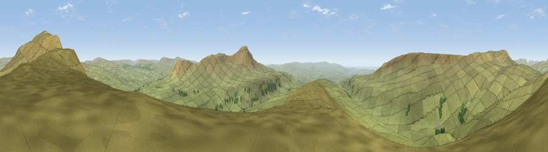

Viewpoint c9583_7451
#4464 in England · top 8% of its area beats it · — · open accessWhere it is
The exact computed spot (SD 72575 79175). Click the marker for map links.
Public access: this spot lies on mapped open-access land (CRoW Act 2000) — you may roam here on foot. Computed from Natural England's CRoW access layer and OpenStreetMap rights of way — not the legal definitive map. Always verify locally.
The view, rendered

A 360° render of this exact spot computed from the terrain model, tree cover and land cover — summer colours, afternoon light, calibrated against photographs of famous viewpoints. Real trees, hedges and buildings will differ in detail.
The panorama
Grey silhouette: terrain skyline in each direction (720 bearings, Earth curvature and refraction included). Dashed green: skyline with trees (+15 m) and buildings (+8 m) as obstacles. Blue strip: how far the ground is visible on each bearing.
Where the view opens
Wedge length = distance to the farthest visible ground on that bearing (vegetation-aware). Rings at 10, 25 and 50 km.
What fills the view
98% grassland · 2% woodland
Angular shares of the visible panorama (visual magnitude), not map area. Landscape diversity 0.05 (0–1 Shannon).
Key numbers
More beautiful places nearby
The staircase of upgrades: each row has a higher view potential than everything closer. Driving times are estimates from straight-line distance, calibrated against real road routing — check an actual route before setting out.
| Place | Direction | Drive | Score |
|---|---|---|---|
| Viewpoint c9573_7446 | SSW · 1 km | ~2 min | 73.2 |
| Viewpoint c9609_7471 | NE · 2 km | ~5 min | 75.9 |
| Whernside | NNE · 3 km | ~7 min | 79.9 |
| Warton Crag | WSW · 24 km | ~40 min | 83.2 |
| Viewpoint near Grange-over-Sands | W · 33 km | ~51 min | 83.4 |
| Viewpoint near Finsthwaite | WNW · 35 km | ~53 min | 90.3 |
| The Knoll | S · 392 km | ~376 min | 91.0 |
54.20758, -2.42197 · source: screening · position refined by local search. Computed location — check access rights before visiting.